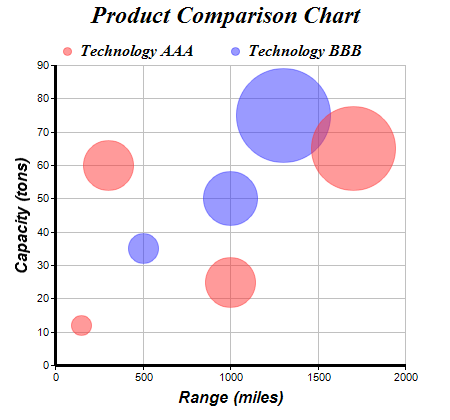

This example demonstrates how to create a bubble chart.
In ChartDirector, a bubble chart can be created as a scatter layer with circles as symbols using
XYChart.addScatterLayer. The sizes of the symbols are then controlled by another data series (z data) using
LineLayer.setSymbolScale. This creates circles of different sizes.
By default, ChartDirector handles z data using pixel units. That means a z value of 50 will result in a symbol size of 50 pixels. If your z data are too small or too large, you may re-scale them using
ArrayMath.mul before passing them to
LineLayer.setSymbolScale.
ChartDirector also supports handling the z data using the same scale as the y (or x) axis by supplying additional arguments to
LineLayer.setSymbolScale. This is useful if the symbol sizes reflect some features of the y (or x) data, such as the standard deviation or confidence of the y (or x) value.
The following is the command line version of the code in "cppdemo/bubble". The MFC version of the code is in "mfcdemo/mfcdemo". The Qt Widgets version of the code is in "qtdemo/qtdemo". The QML/Qt Quick version of the code is in "qmldemo/qmldemo".
#include "chartdir.h"
int main(int argc, char *argv[])
{
// The XYZ points for the bubble chart
double dataX0[] = {150, 300, 1000, 1700};
const int dataX0_size = (int)(sizeof(dataX0)/sizeof(*dataX0));
double dataY0[] = {12, 60, 25, 65};
const int dataY0_size = (int)(sizeof(dataY0)/sizeof(*dataY0));
double dataZ0[] = {20, 50, 50, 85};
const int dataZ0_size = (int)(sizeof(dataZ0)/sizeof(*dataZ0));
double dataX1[] = {500, 1000, 1300};
const int dataX1_size = (int)(sizeof(dataX1)/sizeof(*dataX1));
double dataY1[] = {35, 50, 75};
const int dataY1_size = (int)(sizeof(dataY1)/sizeof(*dataY1));
double dataZ1[] = {30, 55, 95};
const int dataZ1_size = (int)(sizeof(dataZ1)/sizeof(*dataZ1));
// Create a XYChart object of size 450 x 420 pixels
XYChart* c = new XYChart(450, 420);
// Set the plotarea at (55, 65) and of size 350 x 300 pixels, with a light grey border
// (0xc0c0c0). Turn on both horizontal and vertical grid lines with light grey color (0xc0c0c0)
c->setPlotArea(55, 65, 350, 300, -1, -1, 0xc0c0c0, 0xc0c0c0, -1);
// Add a legend box at (50, 30) (top of the chart) with horizontal layout. Use 12pt Times Bold
// Italic font. Set the background and border color to Transparent.
c->addLegend(50, 30, false, "Times New Roman Bold Italic", 12)->setBackground(Chart::Transparent
);
// Add a title to the chart using 18pt Times Bold Itatic font.
c->addTitle("Product Comparison Chart", "Times New Roman Bold Italic", 18);
// Add a title to the y axis using 12pt Arial Bold Italic font
c->yAxis()->setTitle("Capacity (tons)", "Arial Bold Italic", 12);
// Add a title to the x axis using 12pt Arial Bold Italic font
c->xAxis()->setTitle("Range (miles)", "Arial Bold Italic", 12);
// Set the axes line width to 3 pixels
c->xAxis()->setWidth(3);
c->yAxis()->setWidth(3);
// Add (dataX0, dataY0) as a scatter layer with semi-transparent red (0x80ff3333) circle
// symbols, where the circle size is modulated by dataZ0. This creates a bubble effect.
c->addScatterLayer(DoubleArray(dataX0, dataX0_size), DoubleArray(dataY0, dataY0_size),
"Technology AAA", Chart::CircleSymbol, 9, 0x80ff3333, 0x80ff3333)->setSymbolScale(
DoubleArray(dataZ0, dataZ0_size));
// Add (dataX1, dataY1) as a scatter layer with semi-transparent green (0x803333ff) circle
// symbols, where the circle size is modulated by dataZ1. This creates a bubble effect.
c->addScatterLayer(DoubleArray(dataX1, dataX1_size), DoubleArray(dataY1, dataY1_size),
"Technology BBB", Chart::CircleSymbol, 9, 0x803333ff, 0x803333ff)->setSymbolScale(
DoubleArray(dataZ1, dataZ1_size));
// Output the chart
c->makeChart("bubble.png");
//free up resources
delete c;
return 0;
}
© 2023 Advanced Software Engineering Limited. All rights reserved.